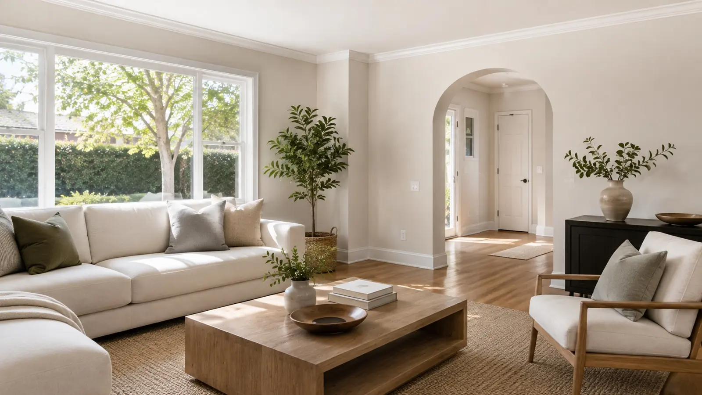

Cabinet Painting & Refinishing in Burbank, CA
Kitchen and bath cabinets degreased, primed, and refinished by a local crew, with a written price before we start.
Call us today (857) 371-3693What it costs Homewyse's May 2026 national estimate is $5.40 to $10.79 per square foot of finished surface for basic prep and two coats. Repairs and stripping the old finish are extra, and your written quote shows the real number.
What we paint Kitchen, bath, and laundry cabinets: doors, drawer fronts, frames, and end panels, plus built-ins.
Free estimate We look at the cabinets in person and hand you a written price, usually within two days of your call.
How we prep Doors and hardware off, a degreasing wash, sanding, a bonding primer, then cabinet enamel in thin, even coats.
Older homes Paint from before 1978 can contain lead, and sanding makes dust, so tell us your home's age. We plan the prep around it.
Where we work Burbank, Glendale, North Hollywood, Toluca Lake, Studio City, and La Crescenta.
What We Refinish in Your Kitchen and Bath
Cabinet painting in Burbank, CA gives a tired kitchen a new look without the cost of a remodel, and our crew handles the whole job: removing doors, cleaning, sanding, priming, finishing, and putting everything back. It is for homeowners with sound cabinets and a dated finish, and the result is a smooth, hard surface that wipes clean. The wall color comes from our interior painting service, and the home page covers the rest.
- Kitchen cabinets. Doors, drawer fronts, face frames, and end panels, refinished as one set so the color matches.
- Bath and laundry cabinets. Vanities and storage that take steam and splashes, finished with a moisture-tolerant enamel.
- Built-ins and shelving. Bookcases, window seats, and pantry units that match the room.
- Prep and small repairs. Degreasing, sanding, filling dings, and caulking gaps before any primer goes on.
How Your Cabinet Refinishing Job Works
- Call or send the form. Tell us how many doors and drawers you have and what color you want. We call back, usually the same day.
- We look at the cabinets. We check the existing finish, the condition of the wood or laminate, and how worn the high-touch spots are. You pick a color and sheen, and we can test a sample.
- You get a written price. It lists every door, drawer, and frame, the prep and repairs, the paint, and the cost, usually within two days of your call.
- We prep, prime, finish, and reinstall. Doors come off, everything is cleaned and sanded, and the primer and enamel go on in coats. We tell you how gently to treat the finish while it cures, based on the product label.
Ready to start? Call (857) 371-3693, or use the form at the top of this page.
Get a free quoteWhat Cabinet Painting Costs
Cabinets are priced by the surface area we finish, not by the room, so your written quote is the only number that counts. This national estimate gives you a starting point for comparing bids.
- $5.40 to $10.79 per square foot of finished surface, basic prep and 2 coats
- Included in that estimate: hardware masking, cleaning, sanding, caulking, spot priming
- Extra stripping the old finish and any cabinet repairs
National estimate: Homewyse, May 2026, for basic mid-range work using popular retail products. Measured on the finished surface plus the openings enclosed by it. Local bids can run higher or lower, so ask for a written quote.
What moves your price
- Number of pieces. Every door, drawer front, and frame is finished on both sides, so a bigger kitchen costs more.
- Current finish. Glossy, greasy, or flaking finishes need more cleaning and sanding than a clean, dull one.
- Material. Raised-panel doors take more brushwork than flat slab doors, and laminate needs a bonding primer.
- Repairs. Chips, water damage, and old hardware holes are filled before priming, and that work is quoted on top.
- Color change. Going from dark to light takes more coats than refreshing a similar shade.
Prep and Finish That Hold Up in a Working Kitchen
Cabinets get touched, splashed, and steamed every day, so the steps below decide whether the finish lasts or chips at the handles.
Doors and hardware off
Doors, drawer fronts, and hinges come off first, so no paint lands on hardware and nothing builds up on the door edges. Each door is labeled so it goes back where it came from.
Degrease and sand
Kitchen cabinets collect cooking grease and hand oils, and paint will not stay on top of them. We wash with a degreasing cleaner, then sand to give the primer something to grip.
Prime, then sand again
A bonding primer goes on first. Sherwin-Williams says to let primer dry at least 24 hours, then sand it again with very fine paper, so the finish coats go on over a smooth base.
Enamel in thin coats
A cabinet enamel goes on with a brush for the recessed details and a mini roller for the flat areas. Thin coats level out better than one heavy coat and leave fewer drips.
What a Written Cabinet Painting Quote Should List
Ask every contractor for the same details in writing so you compare like with like. Ours is in writing too.
- What gets finished. The number of doors, drawer fronts, frames, and end panels, and whether the insides are included.
- Prep and repairs. The degreasing, sanding, and filling included, and the price of any repair.
- The paint. The product, the color, and the sheen, such as satin or semi-gloss.
- Primer and coats. The bonding primer and how many finish coats go on.
- Timeline and use. The start date, the number of days, and when the cabinets can take normal use.
- Guarantee. What the workmanship guarantee covers, written into the quote.
Where We Do Cabinet Painting
We do cabinet painting across Burbank and in Glendale, North Hollywood, Toluca Lake, Studio City, and La Crescenta. In Magnolia Park, most homes date to the 1940s (Wikipedia), so original kitchens with wood cabinets and many old coats of paint are common. Tell us your street when you call and we will book the estimate visit.
Booking Your Cabinet Job and the Guarantee
Your kitchen is out of normal use while the doors are off, so we agree on a start date and a plan for the days in between before work begins. If anything changes, you hear from us first and the new date goes in writing.
The workmanship guarantee is written into your quote, along with what it covers and for how long. To book cabinet painting in Burbank, call (857) 371-3693 or send the form at the top of this page, and we will set up a free estimate visit.
Get a free quote
When Cabinets Are Ready for a New Finish
Painting makes sense when the boxes and doors are solid and only the surface has aged. Look for these signs:
- Yellowed or dull finish. Old varnish or paint has darkened and no longer matches the room.
- Worn spots at handles. The finish has rubbed off where hands touch it most.
- Sticky or greasy feel. Cooking residue has built up, especially near the stove.
- Peeling near the sink. Steam and splashes have lifted the old coating.
- Good structure. Doors close square and the boxes are firm, so the problem is only cosmetic.
Painting the walls too? See our interior painting page.
Why Painted Cabinets Chip and Peel
Most early failures come from skipped prep, not from the paint itself. These are the usual causes:
- Skipped degreasing. Paint over grease and hand oils will not bond, and it lifts in sheets.
- No bonding primer. Glossy or laminate surfaces need a primer made to grip them.
- Wall paint on cabinets. It is too soft for surfaces that are touched all day.
- Rushing the cure. A finish that feels dry can still be soft underneath, so loading shelves early marks it.
- Heavy coats. One thick coat sags and stays soft, where thin coats level and harden.
That is why our cabinet painting quote lists primer, coats, and cure guidance, and why we follow the product label rather than a guess.
Choosing a Sheen for Your Cabinets
The sheen changes how the cabinets look and how easy they are to wipe clean. Sherwin-Williams lists gloss, semi-gloss, and satin as the usual cabinet enamel sheens, and the label on the can has the specifics for each product.
| Sheen | Look | Best for | Tradeoff |
|---|---|---|---|
| Satin | Soft, low shine | Most kitchens and a modern look | Hides flaws well but shows wear marks a little more |
| Semi-gloss | Light shine | Busy kitchens and baths that get wiped often | Highlights dings and brush marks if the base is not smooth |
| Gloss | Bright, glassy | A bold, traditional look | Shows every flaw in the surface, so prep must be perfect |
Older Homes and Lead Paint on Cabinets
In 1978 the federal government banned lead-based paint in homes, and EPA says about three-quarters of U.S. homes built before then still contain some. Sherwin-Williams warns that sanding or scraping old paint can create dust or fumes that contain lead, and that protective equipment, containment, and cleanup are needed.
Cabinets in a 1940s Magnolia Park kitchen or a 1960s ranch may carry several old coats. Tell us your home's age on the first call and we plan the prep, containment, and cleanup around it.
Paint, Strip, or Replace the Cabinets?
Painting is not always the right answer. We tell you honestly which route fits your cabinets before you spend money.
| What we find | Best call | Why |
|---|---|---|
| Solid boxes with a worn or dated finish | Prime and paint | A good base takes new enamel well and costs far less than new cabinets |
| Wood cabinets where you want the grain to show | Strip and refinish | Removing the old finish is extra work, so it is quoted on its own |
| Swollen, water-damaged, or sagging boxes | Replace those units | Paint cannot fix damaged structure, and it will fail again |
| A layout you want to change | Talk to a cabinet installer | Moving or adding cabinets is carpentry, and we say so up front |
Cabinet Painting Questions, Answered
How much does cabinet painting cost?
Homewyse's May 2026 national estimate is $5.40 to $10.79 per square foot of finished surface, for basic prep and two coats. Stripping the old finish and repairs cost extra, and local prices differ, so we put your total in writing before work starts.
How long does the job take?
It depends on how many doors and drawers you have, the condition of the finish, and the drying time between coats. Your written quote lists a start date and the number of days, and the primer needs at least a day to dry before it is sanded again.
Do you paint the doors on site?
Doors and drawer fronts come off the boxes, and the written quote says where each piece is finished and how long it is out. We label every door so it goes back where it came from.
Is painting cabinets better than replacing them?
When the boxes are solid, painting costs less and keeps your layout. Replacement makes sense when the boxes are swollen or sagging, or when you want a new layout, and we tell you which case you are in.
Can you refinish cabinets and keep the wood grain?
Yes, on solid wood. Stripping the old finish is extra work, so the quote prices it separately. Paint covers the grain, so tell us on the first call if you want it to show.